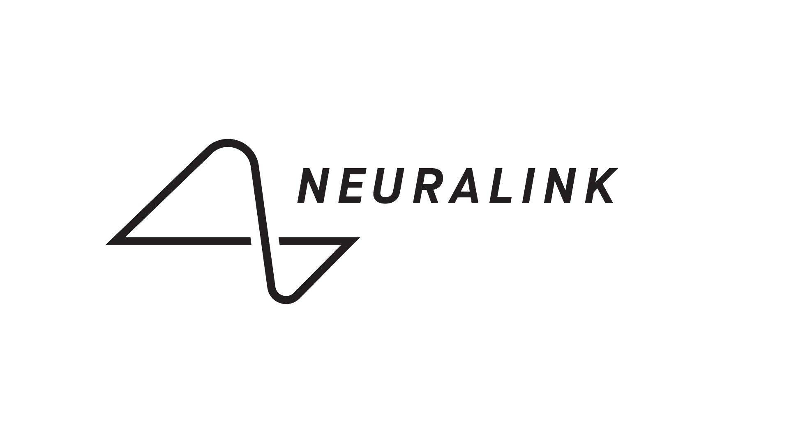
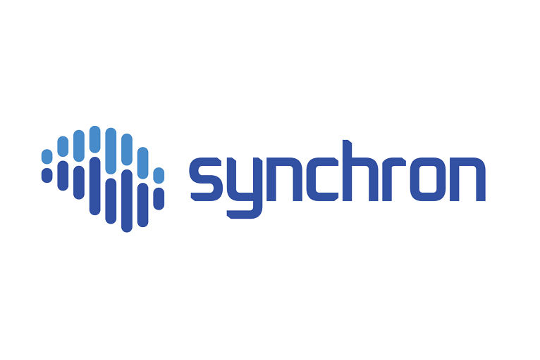

📌 Présentation de Neuralink
Neuralink est une entreprise fondée en 2016 par Elon Musk. Son objectif est de développer une technologie permettant de connecter le cerveau humain à un ordinateur.
Cette technologie pourrait permettre à des personnes paralysées ou atteintes de maladies neurologiques d'utiliser un ordinateur ou de communiquer simplement grâce à la pensée.

⚙️ Comment fonctionne cette technologie ?
Neuralink développe ce que l'on appelle une interface cerveau-ordinateur (BCI).
Une BCI permet de relier directement le cerveau à un ordinateur.
Une petite puce est implantée dans le cerveau et reliée à des fils très fins appelés électrodes.
Ces électrodes captent les signaux électriques du cerveau et les transmettent à un ordinateur qui peut les transformer en actions.
- 💬 écrire un message
- 🖱 contrôler un curseur
- 🎮 jouer à un jeu vidéo
- 🦾 contrôler une prothèse
📰 Évolution du projet
Présentation du projet
Les interfaces cerveau-ordinateur commencent à attirer l'attention du public et des médias.
Lire l'articleTests humains autorisés
La FDA autorise Neuralink à commencer les tests sur des patients humains.
Lire l'articleContrôle d'un ordinateur par la pensée
Un patient parvient à contrôler une souris d'ordinateur grâce à son implant.
Lire l'articlePlusieurs patients implantés
Les essais cliniques continuent avec plusieurs patients équipés d'implants.
Lire l'articleSynchron
L'entreprise Synchron développe une technologie similaire mais moins invasive.

Lire l'article📊 Conclusion
Les interfaces cerveau-ordinateur pourraient révolutionner la médecine et l'informatique.
Elles pourraient aider les personnes paralysées à retrouver une certaine autonomie.
Cependant ces technologies soulèvent aussi des questions importantes sur l'éthique et la sécurité.